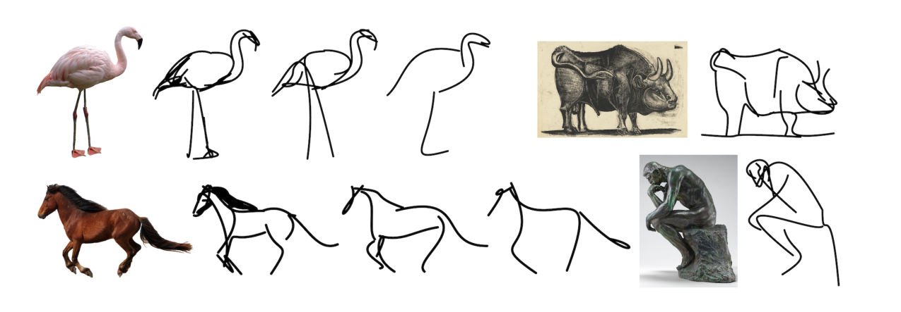
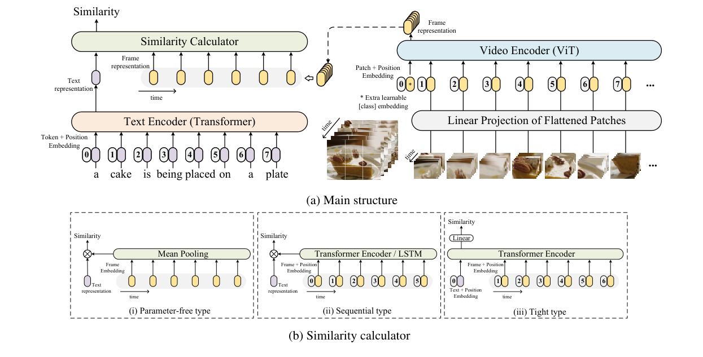
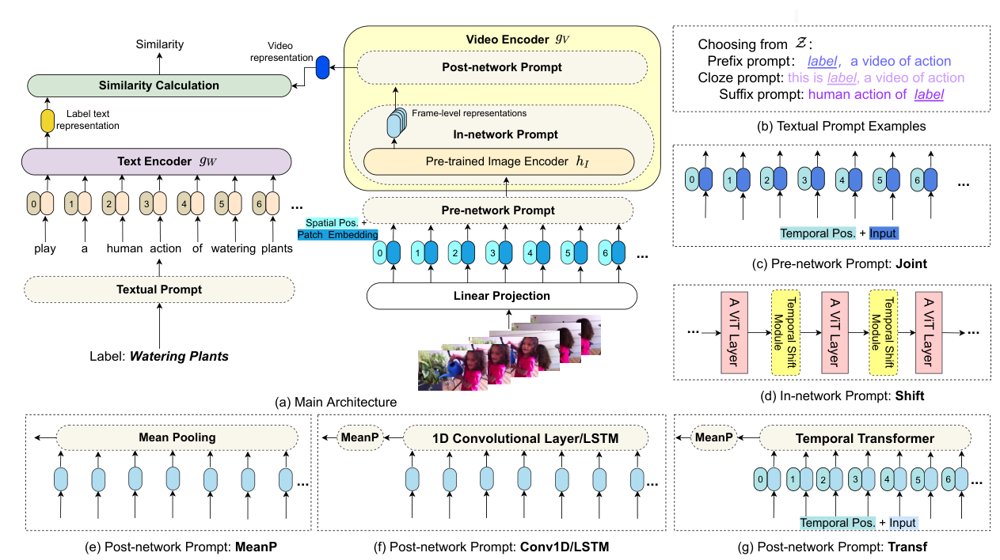
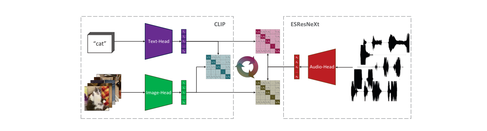
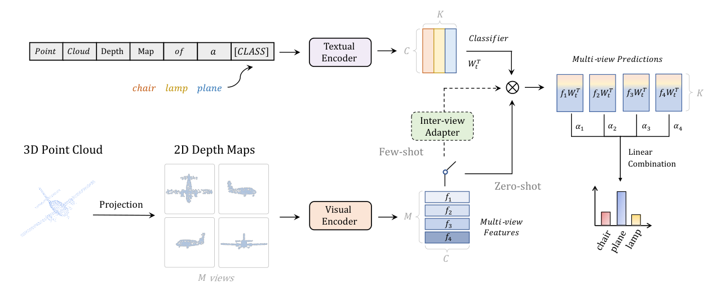

CLIP 改进工作串讲（下）¶
📄 涉及论文链接： - CLIPasso | CLIPDraw | CLIP4Clip - ActionCLIP | AudioCLIP | PointCLIP - DALL·E 2 | Depth Estimation
目录¶
- 核心要点
- 1. CLIPasso：语义感知的物体素描生成
- 2. CLIP4Clip：CLIP 用于视频-文本检索
- 3. ActionCLIP：CLIP 用于动作识别
- 4. CLIP 在其他领域的应用（简述）
- 总结与对比
核心要点¶
- 本期视频是 CLIP 后续延展工作的串讲（下），涵盖 CLIP 在图形学（CLIPasso）、视频理解（CLIP4Clip、ActionCLIP）、Vision-Language 下游任务、音频（AudioCLIP）、3D 点云（PointCLIP）以及深度估计等多个领域的应用与改进。
- CLIPasso 利用 CLIP 的语义稳健性和 zero-shot 能力，结合贝塞尔曲线优化与 saliency-guided 初始化，实现了无需训练数据、可控制抽象程度的语义感知物体素描生成，获得 SIGGRAPH 最佳论文奖。
- 在视频领域，CLIP4Clip 和 ActionCLIP 展示了将图像模型迁移到视频的核心挑战——时序融合；实验表明 Mean Pooling 在小数据集上效果最优，而带参数的时序建模仅在大数据集微调时略有优势。
- CLIP 的使用方式可归纳为三种范式：(1) 作为特征提取器直接融合；(2) 作为 teacher 进行知识蒸馏；(3) 借鉴多模态对比学习思想重新定义正负样本对实现 zero-shot 能力。
- 随着大模型成为趋势，如何高效利用预训练模型（zero-shot、efficient fine-tuning、prompt tuning、adapter）比针对每个小任务从头训练更为重要。
1. CLIPasso：语义感知的物体素描生成¶
论文信息：arXiv:2202.05822，SIGGRAPH 最佳论文奖
1.1 动机与问题定义¶
- 任务目标：将一张真实照片转化为极简形式的简笔画（sketch），同时保持语义信息和结构可识别性，即使用 minimum representation（最简表示）让观众仍能认出物体。
- 灵感来源：毕加索的《一头公牛》系列画作，从细节丰富的写实画逐步抽象为极简线条，但始终能识别出公牛。这一抽象过程极其困难，需要去除不必要元素的同时保留本质特征。
- 已有方法的局限：
- 之前的方法（如文献 3、25、30）依赖素描数据集（sketch datasets），抽象程度由数据集预先定义。
- Data-driven 方式导致生成风格和形式受限，违背图像生成的初衷。
- 已有数据集类别有限：BSD 500（偏几何/边缘检测）、Sketchy、Sketchy COCO（仅 9 类）、Quick Draw（Google 收集，5000 万图像但仅 300 多类）。在新类别上需要重新收集数据和 fine-tune。
- 为何选择 CLIP：
- CLIP 通过文本-图像配对学习，对物体语义信息抓取极好，具备出色的 zero-shot 能力，无需下游微调。
- 前人工作（文献 14，Distill.pub 上的 Multimodal Neurons 可视化文章）证实 CLIP 不受图像风格影响，始终能将物体视觉特征编码良好，这奠定了 CLIPasso 的基础——即使输入是只有几条线的简笔画，CLIP 仍能正确识别。
1.2 核心方法¶

Figure 1: CLIPasso 效果展示。将真实照片（火烈鸟、马、公牛、思想者雕塑）转化为不同抽象程度的简笔画，从左到右笔画数递减，即使最右侧的最简表示仍可识别物体的语义和结构1.2.1 贝塞尔曲线参数化¶
- 在白色画布上定义 N 条贝塞尔曲线（Bezier curve），每条曲线由 4 个二维控制点 \((x, y)\) 定义。
- 通过训练不断更新控制点位置，改变曲线形状，最终形成简笔画。
- 使用已有的可导光栅化器（Differentiable Rasterizer） 将矢量笔画渲染为二维图像，该部分无额外贡献。
1.2.2 目标函数设计¶
Semantic Loss (\(L_S\))： - 将 CLIP 作为 teacher，分别对原始图像和生成的简笔画提取特征。 - 若两者描述同一物体（如都是"马"），则 CLIP 特征应接近。 - 最小化两个特征的差异，保证语义一致性。
Geometric Loss (\(L_G\))： - 仅有语义约束不够——例如马头方向可能反转，语义仍是"马"但与原图不匹配。 - 借鉴 Low-Level Vision 中的 Perceptual Loss 思路：取 CLIP 预训练模型（如 ResNet-50/101）前几层（res2、res3、res4）的特征计算相似性。 - 前几层特征保留空间维度（长宽概念），对几何位置和物体朝向更敏感。 - \(L_S\) + \(L_G\) 共同作用，确保生成结果在语义和几何上都与原图一致。
1.2.3 Saliency-Guided 初始化¶
- 贝塞尔曲线的初始位置对生成质量影响很大，随机初始化不稳定。
- 使用预训练的 Vision Transformer，取最后一层多头自注意力的加权平均作为 Saliency Map。
- 在显著区域采样作为曲线初始控制点，使初始化曲线已接近物体轮廓。
- 效果：收敛极快，100 iteration 即可看出大致轮廓，总共仅需 2000 iteration；单张 V100 GPU 六分钟即可完成。
1.2.4 后处理：自动选择最佳 Sketch¶
- 对每张输入生成 3 张简笔画，用 \(L_S\) + \(L_G\) 计算 loss，选最低者作为最终输出。
- 类似 DALL-E 中用 CLIP 对生成图像重排序的策略。
1.3 实验结果¶
- 不常见物体的泛化能力：借助 CLIP zero-shot 能力，可为芭蕾舞演员、红酒杯、王冠等训练集中未出现的物体生成简笔画，这是之前 data-driven 方法无法做到的。
- 可控抽象程度：通过控制贝塞尔曲线数量（笔画数），实现从精细到极简的不同层次抽象。即使缩减到 1-3 笔，仍能兼顾几何与语义。
- 与前人方法对比：在笔画多和笔画少的情况下，CLIPasso 均能生成更具语义信息的抽象结果。
1.4 局限性¶
- 背景干扰：带背景的图像效果大打折扣，需先用 U2Net 抠图得到纯白背景前景。Two-step 流程非最优，未来应将 automatic mask 融入端到端框架。
- 非序列生成：所有笔画同时生成，而非像人类作画那样逐笔绘制。未来可探索 auto-regressive 形式，使生成更自然、更多样。
- 笔画数手动指定：不同图片达到同等抽象程度所需笔画数不同。未来可将笔画数设为 learnable parameter，让模型自主决定。
1.5 相关工作¶
- CLIPasso 很大程度上借鉴了 CLIPDraw（CLIP 发布后两三周即出现）。
- 推荐精读 Distill.pub 上的 Multimodal Neurons 文章（文献 14），对 CLIP 模型的稳健性、对抗攻击、OCR 攻击等有深入分析和精美可视化。
2. CLIP4Clip：CLIP 用于视频-文本检索¶
论文信息：arXiv:2104.08860，CLIP 发布后约一个半月
2.1 动机¶
- CLIP 天生适合 retrieval 任务：双塔结构，图像和文本编码器独立，特征点乘即可得相似度，扩展性好，可预计算大规模数据集特征。
- 视频相比图像多了时间维度：每帧经 ViT 得到各自的 CLS token，一个文本特征对应多个图像特征，如何计算相似度是核心问题。
2.2 三种相似度计算方式¶

Figure 1: CLIP4Clip 框架。(a) 主结构：视频帧经 Patch+Position Embedding 和 Video Encoder (ViT) 提取帧特征，文本经 Token+Position Embedding 和 Text Encoder (Transformer) 提取文本特征，通过 Similarity Calculator 计算相似度；(b) 三种相似度计算方式：(i) Parameter-Free 用 Mean Pooling 融合多帧特征；(ii) Sequential 用 LSTM/Transformer 做时序建模；(iii) Tight 将文本和视频帧特征一起送入 Transformer Encoder 做 Early Fusion(1) Parameter-Free：Mean Pooling¶
- 对多帧 CLS token 直接取平均，变为单一特征后与文本特征点乘。
- 优点：最简单、无需额外参数。
- 缺点：不考虑时序顺序，无法区分"坐下"与"站起"等时序敏感动作。
- 尽管如此，仍是最广泛使用的方式。
(2) Sequential Type：时序建模¶
- 将多帧特征送入 LSTM 或 Transformer（加 Position Embedding），融合时序信息后输出单一特征。
- Late Fusion 策略：先独立抽取图像和文本特征，再融合。
(3) Tight Type：Early Fusion¶
- 文本 token 和视频帧特征一起送入同一个 Transformer Encoder。
- 文本特征充当类似 CLS token 的角色，通过多层交互后通过 MLP 计算相似度。
- 同时实现时序融合和跨模态融合。
2.3 实验结果与关键 Insight¶
数据集：MSR-VTT、LSMDC、ActivityNet、DiDeMo、MSVD
- Observation 1：CLIP 预训练模型迁移性极强。Zero-shot 性能（30+ Recall）已超越之前所有有监督方法。提升主要归功于 CLIP 预训练数据集（WIT-400M）的高质量，而非下游微调。
- Observation 2：Mean Pooling 在大多数情况下效果最好或接近最好。仅在下游数据量较大时（如 ActivityNet 有一两万个视频），Sequential/Tight Type 才略优，但差距不显著。
- Tight Type 表现最差：作者认为下游数据不足时，强行微调已对齐好的图文空间反而画蛇添足。
- 学习率敏感性：CLIP 微调到视频任务对学习率极其敏感，这与 MoCo 等自监督模型的经验一致。Learning rate 可能是 Transformer 训练中最重要的超参数。
- 3D Patch Projection vs 2D：3D 略优，因其在输入层就融合了时序信息。
- Post Pre-training 的价值：在视频数据上做额外的 post pre-train 可缩小 domain gap，但计算代价高，是一个 trade-off。
3. ActionCLIP：CLIP 用于动作识别¶
论文信息：arXiv:2109.08472
3.1 动机¶
- 传统动作识别是有监督分类任务，依赖标签。但动作标签的定义远比物体标签困难：
- 动作常以短语形式出现（如 "open the door"），"open" 可搭配多种宾语，潜在 label space 接近无穷。
- 标注大量细粒度类别成本高，且 softmax 在超多类别下失效。
- 仅标注常见大类则无法处理新类别和细粒度类别。
- 理想方案：从海量无标签视频中学好特征，zero-shot / few-shot 做下游任务。CLIP 的 zero-shot 能力正好契合此需求。
3.2 方法¶

Figure 2: ActionCLIP 架构。(a) 主架构：视频帧经 Video Encoder g_V 提取特征，标签文本经 Text Encoder g_W 提取特征，通过 Similarity Calculation 计算相似度；(b) 文本 Prompt 的三种形式（Prefix/Cloze/Suffix）；(c) Pre-Network Prompt (Joint) 在输入层拼接时空 token；(d) In-Network Prompt (Shift) 在 ViT Block 间插入 TSM 模块；(e)-(g) Post-Network Prompt 分别用 Mean Pooling、Conv1D/LSTM、Temporal Transformer 融合多帧特征3.2.1 Multimodal Framework¶
- 整体结构与 CLIP 类似：视频编码器提取视觉特征，文本编码器（标签作为文本）提取文本特征，计算相似度矩阵。
- 关键区别：CLIP 中正样本仅在对角线（每个图像-文本对独立），但动作识别中同一 batch 内可能有多个样本属于同一标签，相似度矩阵不再是 one-hot。解决方案：将 Cross Entropy Loss 替换为 KL Divergence，衡量两个分布的相似度。
3.2.2 Prompt 设计¶
文本 Prompt（对应 CLIP 的 prompt engineering）： - Prefix："a video of action [label]" - Cloze（完形填空）："a photo of [label] action" - Suffix："[label], a human action"
视觉 Prompt（实际更接近 Adapter）： - Pre-Network Prompt (Joint)：在输入层面将时空 token 拼接，加入时序 Position Embedding。 - In-Network Prompt (Shift)：在每个 ViT Block 中间插入 TSM（Temporal Shift Module）模块。Shift 操作最早在图像领域提出（zero cost, zero memory），后被 TSM 引入视频领域用于时序建模，Swin Transformer 也使用了类似的 Shift Window 概念。增强时序建模能力但不引入额外参数和计算量。 - Post-Network Prompt：将多帧特征融合为单一视频级表征，方式与 CLIP4Clip 完全相同——Mean Pooling、LSTM/1D Conv、Temporal Transformer 三种选择。
3.3 实验与消融¶
以问题驱动的消融实验呈现：
Q1: Multimodal Framework 是否有用？ - 将 one-hot 标签换为 language-guided 目标函数，Top-1 准确率从 75 提升至 78，提升显著。
Q2: Pre-train 阶段是否重要？ - 随机初始化仅 ~36% 准确率（数据量不足以从头训练 ViT）。 - 使用 CLIP 初始化视觉端后性能大幅提升。 - 文本端是否用 CLIP 初始化影响不大（随机初始化仅掉约 1 个点），这与多模态领域的普遍观察一致：视觉端的初始化远比文本端重要，BERT 初始化往往训练不起来。
Q3: Prompt 是否有用？ - 文本 Prompt 和 Pre-Network Prompt 作用微弱。 - In-Network Prompt (Shift) 反而拖后腿，去掉后性能下降 7 个点。 - Post-Network Prompt 最有效，Temporal Transformer 优于 Mean Pooling。这与 CLIP4Clip 结论稍有不同，原因是动作识别数据集规模更大（Something-Something 20 万视频、K400 近 30 万视频），足以支撑 Fine-tune；而 Video Text Retrieval 数据集仅数千至一两万视频，Mean Pooling 更合适。
Zero-Shot 与 Few-Shot 能力： - 之前所有方法 zero-shot 能力为 0，ActionCLIP 可直接 zero-shot，且性能已超过之前方法的 few-shot 水平。 - Few-shot 增长较缓（主要能力来自 CLIP zero-shot），但在 8-shot 时已在 K400、HMDB51、UCF101 三个数据集上超越之前方法。
4. CLIP 在其他领域的应用（简述）¶
4.1 Vision-Language 下游任务微调¶
论文信息：arXiv:2107.06383
- 首个大规模 empirical study：用 CLIP 作为视觉编码器初始化，在各种 Vision-Language 下游任务上 Fine-tune。
- 结论：YES，CLIP 初始化能持续提升下游 VL 任务准确度。
- 所有任务、数据集、训练细节均为已有方法，仅替换视觉编码器为 CLIP。
4.2 AudioCLIP：音频模态扩展¶
论文信息：arXiv:2106.13043
- 在 Image-Text 基础上新增 Audio 模态，形成三模态对比学习。
- 利用视频数据集天然包含视频帧、文本标签、音频三模态对齐数据。
- 音频编码器使用 ESResNet，将语音频谱编码为特征。
- 三组相似度矩阵（Text-Audio、Image-Audio、Image-Text）的 loss 相加联合训练。
- 可 Zero-Shot 做语音分类任务，体现 CLIP 框架的灵活性和可扩展性。

Figure 1: AudioCLIP 模型架构概览。左侧为 CLIP 的文本-图像模型，通过 Text-Head 和 Image-Head 联合训练学习共享多模态 embedding 空间；右侧为 ESResNeXt 音频模型，新增的 Audio-Head 与其他两个模态交互，使模型能同时处理文本、图像、音频三种模态4.3 PointCLIP：3D 点云理解¶
论文信息：arXiv:2112.02413，CVPR 2022
- 核心思路：将 3D 点云投射为 2D 深度图（Depth Map），作为桥梁连接 3D 与 2D。
- 深度图作为 RGB 图像输入 CLIP 视觉编码器，利用 CLIP 对任意风格图像的稳健性。
- 文本 Prompt 改为 "point cloud depth map of a [object]"，帮助模型适应 3D→2D 的转换。
- 支持训练和 Zero-Shot 推理。
- 额外引入 Inter-View Adapter 融合领域知识。

Figure 2: PointCLIP Pipeline。将 3D 点云投影为多视角 2D 深度图（M views），深度图经 CLIP 视觉编码器提取多视角特征 f_i，文本 Prompt “point cloud depth map of a [CLASS]” 经文本编码器提取特征，通过 Inter-View Adapter 融合多视角特征并加权求和（logits_p = Σα_i·logits_i），支持 Zero-Shot（直接分类）和 Few-Shot（通过 Adapter 微调）两种模式4.4 语言能否理解深度信息？¶
论文信息：arXiv:2207.01077
- 将深度估计从回归问题转化为分类问题：将深度距离离散化为 7 个类别（giant, extremely close, close, ..., far, unseen）。
- 文本 Prompt："this object is [depth category]"，得到 7 个文本特征。
- 图像特征与 7 个文本特征点乘得到 H×W×7 的相似度矩阵（与 LSeg 类似）。
- Softmax + Argmax 得到每个像素的深度类别，生成深度估计图。
- 人为建立类别单词与实际深度距离的一一映射（如 giant ≈ 1m）。
- 巧妙地将深度估计变为文本理解问题，利用 CLIP 的语义能力。
总结与对比¶
CLIP 使用的三种范式¶
| 范式 | 改动程度 | 做法 | 代表工作 |
|---|---|---|---|
| 特征融合 | 最小 | 用 CLIP 提取特征，与原有特征融合（点乘/拼接），训练框架不变 | VL 下游微调 |
| 知识蒸馏 | 中等 | CLIP 作为 teacher，蒸馏其前层或最终特征到其他模态/任务 | PointCLIP、3D 迁移 |
| 对比学习思想 | 较大 | 借鉴多模态对比学习框架，自定义正负样本对，实现 zero-shot | CLIPasso、ActionCLIP、LSeg |
视频领域的关键发现¶
- Mean Pooling 是强基线：在数据量有限时几乎总是最优选择，简单高效。
- 数据量决定微调策略：小数据集不宜微调（直接用 CLIP 特征更好），大数据集可受益于带参数的时序建模。
- 学习率是最关键的超参数：CLIP 微调对学习率极度敏感，建议充分搜索。
- 视觉初始化远比文本初始化重要：ViT 初始化效果好，BERT 初始化往往失败。
未来方向¶
- Efficient Fine-Tuning（Prompt Tuning、Adapter、LoRA）：仅训练 1% 甚至 0.01% 的参数即可适配下游任务。
- 端到端的多模态统一框架，避免 two-step 流程。
- 视频领域仍是 open question：训练数据集、测试指标、时序建模方式均未统一。
- 将笔画数等超参数变为 learnable，让模型自主决策。
- Auto-regressive 生成方式模拟人类创作过程。